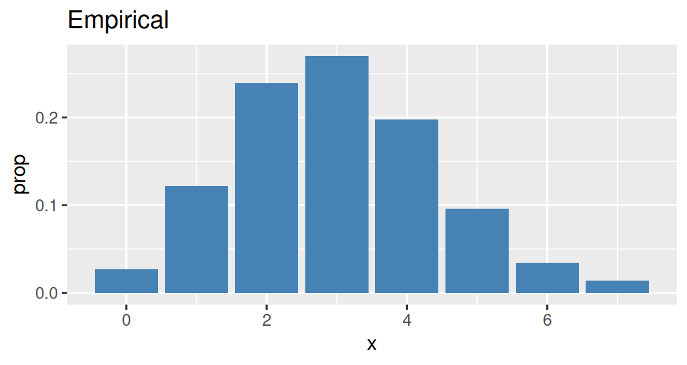
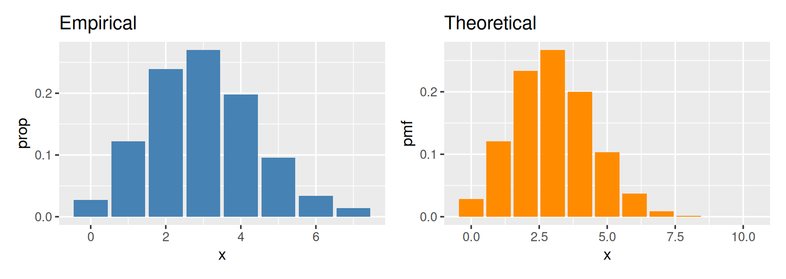
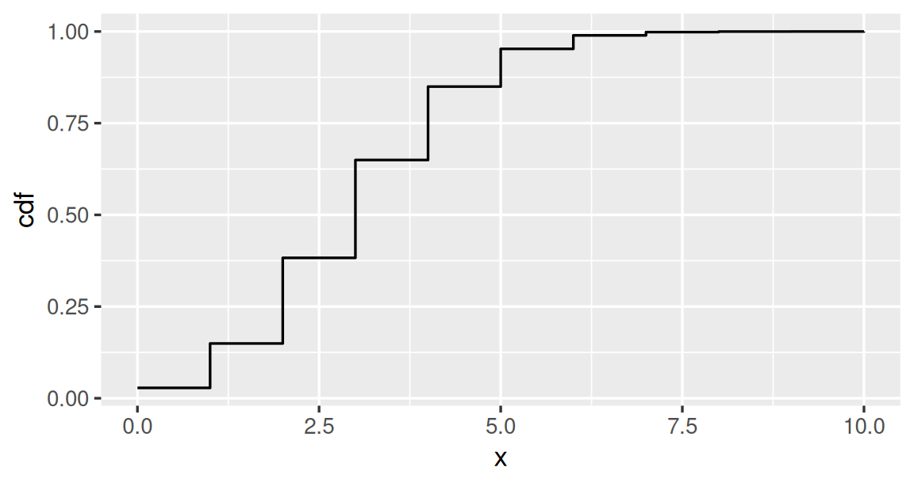
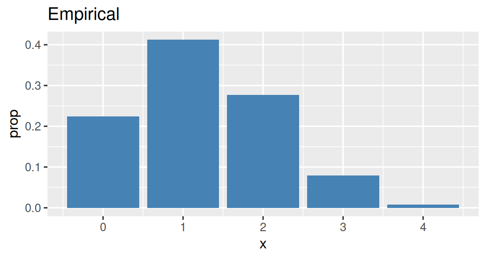
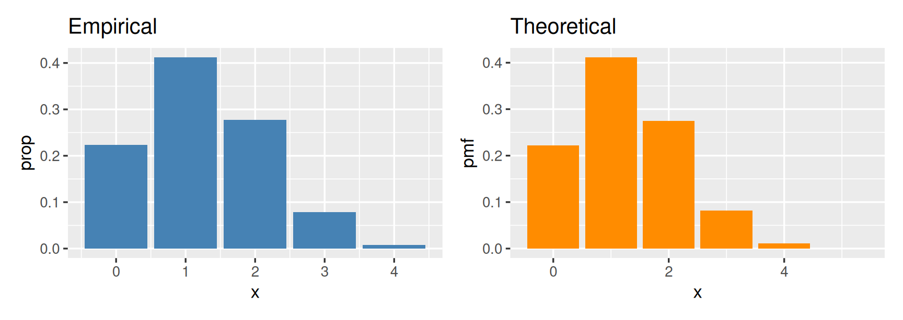
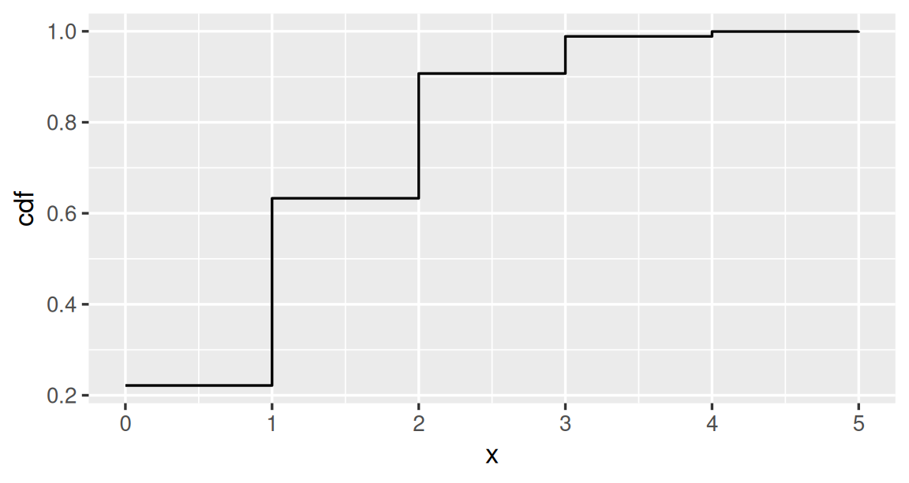
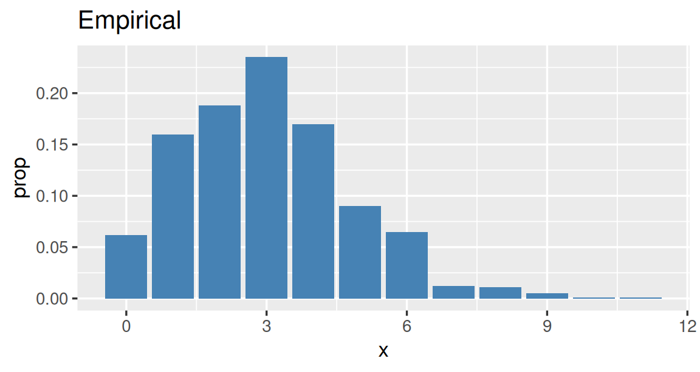
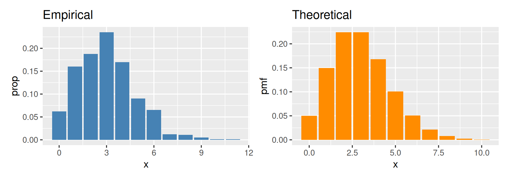
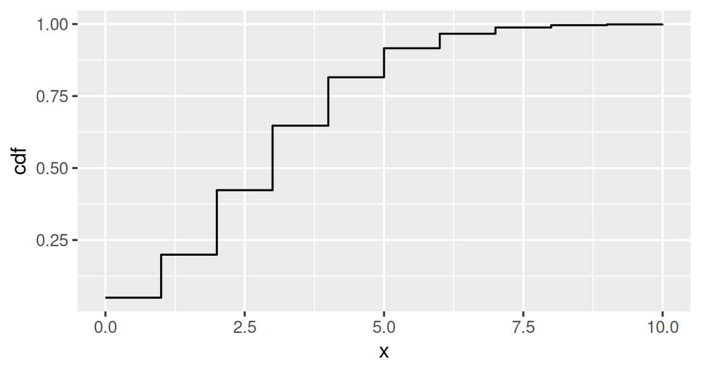

Extra Practice: Coding Probability
Click to expand and work on the sections you need.
A good rule of thumb is this: do a bunch of problems in each section until you get bored because everything has gotten too easy.
The d, p and r functions
Computing probabilities, and drawing random values, from named distributions.
Write your code in the editor below each question, then click Run Code.
Function reference
| Distribution | \(P(X = x)\) | \(P(X \le x)\) | Random draws |
|---|---|---|---|
| \(Bin(n, p)\) | dbinom(x, size, prob) |
pbinom(q, size, prob) |
rbinom(n, size, prob) |
| \(HG(N, G, n)\)† | dhyper(x, m, n, k) |
phyper(q, m, n, k) |
rhyper(nn, m, n, k) |
| \(Poisson(\lambda)\) | dpois(x, lambda) |
ppois(q, lambda) |
rpois(n, lambda) |
† Watch out for the hypergeometric arguments:
mis \(G\), the number of successes in the box.nis \(N - G\), the number of failures in the box. R’snis not our \(n\)!kis \(n\), the number of draws.
Question 1: Exactly 3 heads
You flip a fair coin 8 times. Compute the probability of getting exactly 3 heads.
Expected output is below, as a hint
[1] 0.21875Show answer
dbinom(3, size = 8, prob = 0.5)Question 2: At most 6 free throws
A basketball player makes each free throw with probability 0.7, independently. She takes 10 free throws. Compute the probability that she makes at most 6 of them.
Expected output is below, as a hint
[1] 0.3503893Show answer
pbinom(6, size = 10, prob = 0.7)“At most 6” is \(P(X \le 6)\), which is exactly what pbinom() computes.
Question 3: At least 4 sixes
You roll a fair die 12 times. Compute the probability of rolling at least 4 sixes.
Expected output is below, as a hint
[1] 0.1251781Show answer
1 - pbinom(3, size = 12, prob = 1/6)\(P(X \ge 4) = 1 - P(X \le 3)\). Using pbinom(4, ...) would be off by one, since it includes 4.
Adding up the pmf also works:
sum(dbinom(4:12, size = 12, prob = 1/6))Question 4: Between 5 and 8
Let \(X \sim Bin(20, 0.3)\). Compute \(P(5 \le X \le 8)\).
Expected output is below, as a hint
[1] 0.6491608Show answer
pbinom(8, size = 20, prob = 0.3) - pbinom(4, size = 20, prob = 0.3)\(P(X \le 8)\) minus \(P(X \le 4)\) leaves exactly the values 5 through 8. Or add them up directly:
sum(dbinom(5:8, size = 20, prob = 0.3))Question 5: The whole pmf at once
Let \(X\) be the number of heads in 4 flips of a fair coin. In one line of code, compute \(P(X = x)\) for every possible value \(x = 0, 1, 2, 3, 4\).
Expected output is below, as a hint
[1] 0.0625 0.2500 0.3750 0.2500 0.0625Show answer
dbinom(0:4, size = 4, prob = 0.5)dbinom() accepts a vector of values, and returns one probability for each.
Question 6: Red marbles
A bag holds 15 marbles, 5 of them red. You draw 4 marbles without replacement. Compute the probability that exactly 2 of them are red.
Expected output is below, as a hint
[1] 0.3296703Show answer
dhyper(2, m = 5, n = 10, k = 4)m is the 5 red marbles, n is the 10 marbles that aren’t red, and k is the 4 draws.
Question 7: At most one ace
You’re dealt 5 cards from a well-shuffled standard 52-card deck. Compute the probability that your hand has at most 1 ace.
Expected output is below, as a hint
[1] 0.9583156Show answer
phyper(1, m = 4, n = 48, k = 5)Question 8: Catching a bad bulb
A box holds 50 light bulbs, 6 of them defective. An inspector tests 8 bulbs, chosen without replacement. Compute the probability that the inspector finds at least one defective bulb.
Expected output is below, as a hint
[1] 0.6698833Show answer
1 - dhyper(0, m = 6, n = 44, k = 8)“At least one” is everything except zero, so subtract \(P(X = 0)\) from 1.
Question 9: Find the bug
A bag holds 15 marbles, 5 of them red. Someone wants the probability of drawing exactly 2 red marbles in 4 draws without replacement, and writes:
dhyper(2, m = 5, n = 15, k = 4)The code runs, but the answer is wrong. Fix it.
Show answer
dhyper(2, m = 5, n = 10, k = 4)n is the number of marbles that aren’t red, \(15 - 5 = 10\), not the total number of marbles. The buggy code describes a bag of 20 marbles.
Question 10: Simulate some free throws
The player from Question 2 (70% free throws) shoots 10 free throws every day for a week. Use rbinom() to simulate how many she makes on each of the 7 days.
Expected output is below, as a hint
Your numbers will be different, since they’re random, but you should get 7 whole numbers between 0 and 10, mostly around 7. For example:
[1] 8 8 7 5 8 5 5Show answer
rbinom(7, size = 10, prob = 0.7)In rbinom(), the first argument n is how many random values you want (7 days), and size is the number of trials in each one (10 free throws).
Question 11: Simulate some poker hands
Use rhyper() to simulate the number of hearts in each of 6 different 5-card hands, each dealt from a full, well-shuffled deck.
Expected output is below, as a hint
Your numbers will be different, but you should get 6 whole numbers between 0 and 5, mostly 0, 1 or 2. For example:
[1] 0 2 1 0 3 3Show answer
rhyper(6, m = 13, n = 39, k = 5)The first argument, nn, is how many hands to simulate.
Question 12: Help desk emails
A help desk gets an average of 3 emails per hour, and the number of emails in an hour follows a \(Poisson(3)\) distribution. Compute the probability that the help desk gets no emails in an hour, and then the probability that it gets at most 2.
Expected output is below, as a hint
[1] 0.04978707[1] 0.4231901Show answer
dpois(0, lambda = 3)
ppois(2, lambda = 3)
Simulating with rep(), sample() and replicate()
Building boxes of tickets, drawing from them, and repeating the experiment many times.
Write your code in the editor below each question, then click Run Code. Your answers to the simulation questions will be a little different from the hints, since they’re random.
Question 1: Build a box
Use rep() to make a box (a vector) that holds 20 tickets marked "X" and 20 tickets marked "O".
Expected output is below, as a hint
[1] "X" "X" "X" "X" "X" "X" "X" "X" "X" "X" "X" "X" "X" "X" "X" "X" "X" "X" "X"
[20] "X" "O" "O" "O" "O" "O" "O" "O" "O" "O" "O" "O" "O" "O" "O" "O" "O" "O" "O"
[39] "O" "O"Show answer
c(rep("red", 3), rep("blue", 2))This also works, using a vector for times:
rep(c("red", "blue"), times = c(3, 2))Question 2: times vs. each
Before you run them, predict what each of these lines will print. Then run them and check.
Show answer
rep(1:3, times = 2) # 1 2 3 1 2 3
rep(1:3, each = 2) # 1 1 2 2 3 3times repeats the whole vector, while each repeats every element before moving on to the next.
Question 3: A 30% box
Make a box of tickets that gives a 30% chance of drawing a 1 and a 70% chance of drawing a 0. Then draw 20 times from it, with replacement, and add up the draws.
Expected output is below, as a hint
A single whole number between 0 and 20, usually around 6. For example:
[1] 0Show answer
box <- c(rep(1, 3), rep(0, 7))
sum(sample(box, size = 10, replace = TRUE))Because the tickets are 1s and 0s, the sum counts the 1s.
Question 4: Repeat it
Use replicate() to repeat the experiment from Question 3 (20 draws from the 30% box, then a sum) 5 times.
Expected output is below, as a hint
5 whole numbers between 0 and 20. For example:
[1] 8 4 7 8 4Show answer
replicate(5, sum(sample(box, size = 20, replace = TRUE)))replicate(5, ...) runs the code inside 5 times and collects the 5 results in a vector.
Question 5: Sixes, simulated
Simulate rolling a fair die 12 times and counting the sixes, and repeat that 10,000 times. Use your simulation to estimate the probability of rolling at least 4 sixes. Then compare your estimate to the exact answer from pbinom() (Question 3 of the first section).
Expected output is below, as a hint
Your estimate should be close to the exact answer:
[1] 0.1251781Show answer
die <- 1:6
sixes <- replicate(10000, sum(sample(die, size = 12, replace = TRUE) == 6))
mean(sixes >= 4)sample(die, ...) == 6 gives TRUE for each six, and sum() counts the TRUEs. Then mean(sixes >= 4) is the proportion of the 10,000 experiments with at least 4 sixes.
A box of 1s and 0s also works: box <- c(1, rep(0, 5)), then sum(sample(box, size = 12, replace = TRUE)).
Question 6: Bad bulbs, simulated
Simulate the light bulb inspection from Question 8 of the first section: a box of 50 bulbs, 6 of them defective, and the inspector tests 8 without replacement. Repeat it 10,000 times, and estimate the probability that the inspector finds at least one defective bulb.
Expected output is below, as a hint
Your estimate should be close to the exact answer:
[1] 0.6698833Show answer
bulbs <- c(rep(1, 6), rep(0, 44))
defectives <- replicate(10000, sum(sample(bulbs, size = 8)))
mean(defectives >= 1)sample() draws without replacement unless you tell it otherwise, which is what we want here.
Question 7: Betting on red
A roulette wheel has 18 red pockets and 20 that aren’t red. Each $1 bet on red wins $1 if the ball lands on red and loses $1 otherwise. Build a box for the net gain of one bet, then simulate the total net gain from 10 bets, repeated 10,000 times. Estimate the probability that you come out ahead (a total net gain above 0).
Expected output is below, as a hint
Your estimate should be close to 0.31. For example:
[1] 0.3203Show answer
bet <- c(rep(1, 18), rep(-1, 20))
gains <- replicate(10000, sum(sample(bet, size = 10, replace = TRUE)))
mean(gains > 0)The box has a ticket for each pocket: 18 marked \(+1\) and 20 marked \(-1\). Each spin is a draw with replacement.
Putting it all together
Simulating, then plotting empirical distributions, pmfs and cdfs.
Each question has three parts. Write your code in the editor below each part, then click Run Code. dplyr, ggplot2 and patchwork are already loaded for you. Run part (a) before part (b), since (b) uses the plot you saved in (a).
Question 1: Climbing goats
At a goat yoga class, each of 10 goats independently has a 30% chance of climbing onto someone’s back. Let \(X\) be the number of goats that climb, so \(X \sim Bin(10, 0.3)\).
(a) Simulate, then plot the empirical distribution
Use the r function to simulate 1,000 values of \(X\). Put them in a data frame, and plot the empirical distribution: the proportion of the 1,000 simulations that gave each value. Give the plot the title “Empirical” and a fill color of your choice, and save it as p_emp.
Expected output is below, as a hint
Your plot will look a little different, since it’s random.

Show answer
sims <- rbinom(1000, size = 10, prob = 0.3)
p_emp <- data.frame(x = sims) |>
group_by(x) |>
summarize(prop = n() / 1000) |>
ggplot(aes(x = x, y = prop)) +
geom_col(fill = "steelblue") +
labs(title = "Empirical")
p_emp(b) Plot the pmf, next to the empirical distribution
Use the d function to compute \(P(X = x)\) for \(x = 0, 1, \ldots, 10\), and plot the pmf. Give this plot the title “Theoretical” and a different fill color from p_emp, and save it as p_pmf. Then use patchwork to show p_emp and p_pmf side by side. How do they compare?
Expected output is below, as a hint
Your left-hand plot will look a little different, since it’s random.

Show answer
p_pmf <- data.frame(x = 0:10) |>
mutate(pmf = dbinom(x, size = 10, prob = 0.3)) |>
ggplot(aes(x = x, y = pmf)) +
geom_col(fill = "darkorange") +
labs(title = "Theoretical")
p_emp + p_pmf(c) Plot the cdf
Use the p function to compute \(P(X \le x)\) for the same values, and plot the cdf. geom_step() draws a step function, which is just what a cdf looks like.
Expected output is below, as a hint

Show answer
data.frame(x = 0:10) |>
mutate(cdf = pbinom(x, size = 10, prob = 0.3)) |>
ggplot(aes(x = x, y = cdf)) +
geom_step()Question 2: Hearts in a hand
You’re dealt 5 cards from a well-shuffled standard deck. Let \(X\) be the number of hearts in your hand, so \(X \sim HG(52, 13, 5)\).
(a) Simulate, then plot the empirical distribution
Use the r function to simulate 1,000 values of \(X\). Put them in a data frame, and plot the empirical distribution: the proportion of the 1,000 simulations that gave each value. Give the plot the title “Empirical” and a fill color of your choice, and save it as p_emp.
Expected output is below, as a hint
Your plot will look a little different, since it’s random.

Show answer
sims <- rhyper(1000, m = 13, n = 39, k = 5)
p_emp <- data.frame(x = sims) |>
group_by(x) |>
summarize(prop = n() / 1000) |>
ggplot(aes(x = x, y = prop)) +
geom_col(fill = "steelblue") +
labs(title = "Empirical")
p_emp(b) Plot the pmf, next to the empirical distribution
Use the d function to compute \(P(X = x)\) for \(x = 0, 1, \ldots, 5\), and plot the pmf. Give this plot the title “Theoretical” and a different fill color from p_emp, and save it as p_pmf. Then use patchwork to show p_emp and p_pmf side by side. How do they compare?
Expected output is below, as a hint
Your left-hand plot will look a little different, since it’s random.

Show answer
p_pmf <- data.frame(x = 0:5) |>
mutate(pmf = dhyper(x, m = 13, n = 39, k = 5)) |>
ggplot(aes(x = x, y = pmf)) +
geom_col(fill = "darkorange") +
labs(title = "Theoretical")
p_emp + p_pmf(c) Plot the cdf
Use the p function to compute \(P(X \le x)\) for the same values, and plot the cdf. geom_step() draws a step function, which is just what a cdf looks like.
Expected output is below, as a hint

Show answer
data.frame(x = 0:5) |>
mutate(cdf = phyper(x, m = 13, n = 39, k = 5)) |>
ggplot(aes(x = x, y = cdf)) +
geom_step()Question 3: Help desk emails
A help desk gets a \(Poisson(3)\) number of emails each hour. Let \(X\) be the number of emails in a given hour. (\(X\) can be any whole number 0, 1, 2, …, but values above 10 are very unlikely, so use \(x = 0, 1, \ldots, 10\) for the pmf and cdf.)
(a) Simulate, then plot the empirical distribution
Use the r function to simulate 1,000 values of \(X\). Put them in a data frame, and plot the empirical distribution: the proportion of the 1,000 simulations that gave each value. Give the plot the title “Empirical” and a fill color of your choice, and save it as p_emp.
Expected output is below, as a hint
Your plot will look a little different, since it’s random.

Show answer
sims <- rpois(1000, lambda = 3)
p_emp <- data.frame(x = sims) |>
group_by(x) |>
summarize(prop = n() / 1000) |>
ggplot(aes(x = x, y = prop)) +
geom_col(fill = "steelblue") +
labs(title = "Empirical")
p_emp(b) Plot the pmf, next to the empirical distribution
Use the d function to compute \(P(X = x)\) for \(x = 0, 1, \ldots, 10\), and plot the pmf. Give this plot the title “Theoretical” and a different fill color from p_emp, and save it as p_pmf. Then use patchwork to show p_emp and p_pmf side by side. How do they compare?
Expected output is below, as a hint
Your left-hand plot will look a little different, since it’s random.

Show answer
p_pmf <- data.frame(x = 0:10) |>
mutate(pmf = dpois(x, lambda = 3)) |>
ggplot(aes(x = x, y = pmf)) +
geom_col(fill = "darkorange") +
labs(title = "Theoretical")
p_emp + p_pmf(c) Plot the cdf
Use the p function to compute \(P(X \le x)\) for the same values, and plot the cdf. geom_step() draws a step function, which is just what a cdf looks like.
Expected output is below, as a hint

Show answer
data.frame(x = 0:10) |>
mutate(cdf = ppois(x, lambda = 3)) |>
ggplot(aes(x = x, y = cdf)) +
geom_step()